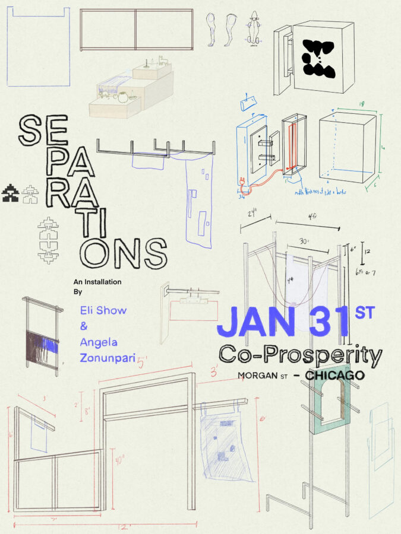

SEPARATIONS
In SEPARATIONS, artists Eli Show and Angela Zonunpari explore the arbitrary boundaries between art and life, and how they intertwine if given space and time. As “incidental collaborators,” they navigate the mysticisms of creation and the everyday utility of objects. By easily transitioning between these “separations,” they show connections between their art practices and their lives. The artists are based in Sioux Falls, South Dakota.